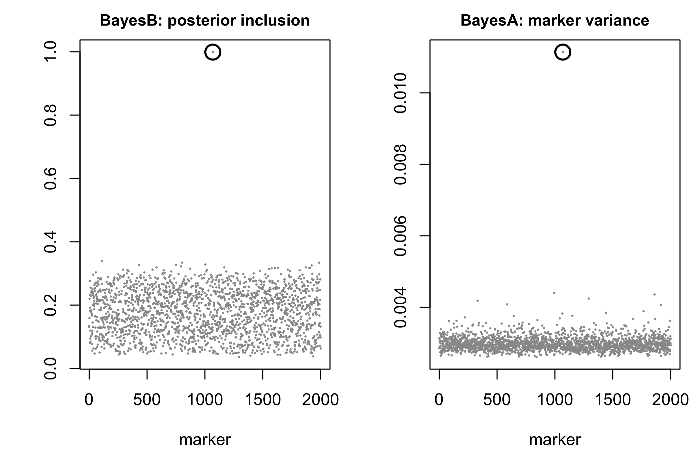
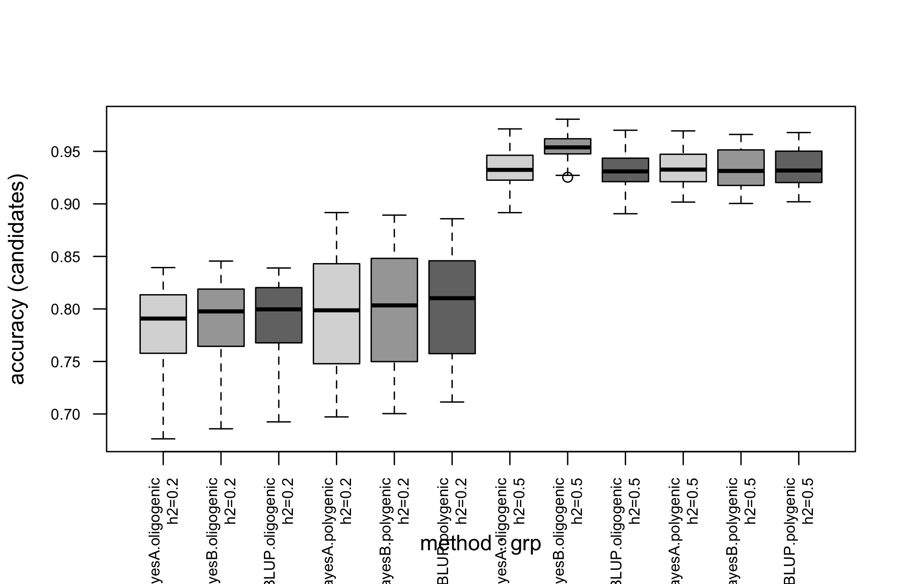

ctx <- simulate_data(book_cfg)
N <- ctx$N
g <- ctx$traits[, 1] # the true genetic value -- known only to us13 Predicting breeding values: GBLUP, BayesA, BayesB
Three earlier chapters flagged the same gap and moved on. Chapter 4 built ctx$traits from known marker effects and called the result “an optimistic ceiling.” Chapter 11’s Finding 5 showed what happens once the index carries real error, but manufactured that error rather than fitting a model to produce it. Chapter 20 repeats the caveat and still moves on. This chapter is where the gap closes: it fits actual prediction models to a training population with real phenotypic noise, and hands the result to the same stage1_build() contract every later chapter already consumes.
vanraden_G() has said since Chapter 1 that its matrix “is the right matrix for GBLUP.” Nothing in the package has used it that way until now.
The chapter also has a second job, which only became apparent once the models were fitted: an accuracy number means nothing until you say what was hidden from the model. Section 13.4 shows that the obvious split – hold out a random 40% of the hybrids – answers the easiest of the three questions a hybrid programme actually asks, and that the fit itself says so, before the truth is consulted.
13.1 A training population with real noise
Everywhere else in this book, ctx$index is the truth. Here it plays a different role: it is the value a real breeding programme does not get to see, and can only estimate from phenotypes recorded on a subset of individuals.
A phenotype is the genetic value plus environmental noise, \(y = g + e\), and heritability is the fraction of phenotypic variance the genetic part accounts for, \(h^2 = \mathrm{Var}(g) / (\mathrm{Var}(g) + \mathrm{Var}(e))\). traits is built by scale(), so \(\mathrm{Var}(g) = 1\) exactly, and the noise variance that delivers a target \(h^2\) is \((1-h^2)/h^2\):
h2 <- 0.5
set.seed(9)
e <- rnorm(N, 0, sqrt((1 - h2) / h2))
y <- g + eSplit the population into a training set, whose phenotypes the model gets to see, and a candidate set – the hybrids actually being selected among – whose phenotypes it does not:
set.seed(9)
train <- sample.int(N, floor(0.6 * N))
cand <- setdiff(seq_len(N), train)
c(train = length(train), candidates = length(cand))
#> train candidates
#> 375 25013.2 The truth this chapter is predicting
Two properties of \(g\) decide everything that follows, and both are consequences of how Chapter 4 built it rather than choices made here.
13.2.1 The generative model is GBLUP’s own assumption
ctx$traits is scale(Z %*% B) with the marker effects \(\mathbf{B}\) drawn independently. For a single trait that is \(\mathbf{g} = \mathbf{Z}\boldsymbol\beta\) with \(\mathrm{Var}(\boldsymbol\beta) = \mathbf{I}\sigma^2_\beta\), so
\[\mathrm{Var}(\mathbf{g}) = \mathbf{Z}\mathbf{Z}'\sigma^2_\beta = \mathbf{G}\,\underbrace{2\textstyle\sum_k p_k(1-p_k)\,\sigma^2_\beta}_{\sigma^2_u},\]
because \(\mathbf{G}\) is defined as \(\mathbf{Z}\mathbf{Z}'\) over that same divisor (Chapter 1). The second equality is exact, not approximate:
vr <- vanraden_G(ctx$X * 2)
s2 <- 2 * sum(vr$p * (1 - vr$p))
max(abs(tcrossprod(vr$Z) / s2 - ctx$G))
#> [1] 0So the covariance GBLUP assumes for the breeding values is, up to the scalar \(\sigma^2_u\), the covariance the breeding values actually have. This simulation is the infinitesimal model, exactly and not approximately, and that single fact is most of the answer to “which model wins” below. It is also the sense in which every accuracy in this chapter is a best case: no model here is misspecified.
13.2.2 A hybrid’s value is the mean of two parental values
The hybrids are F1s of homozygous lines, so a hybrid’s marker row is the average of its two parents’ rows, and averaging is linear. For any additive effect vector whatsoever, the hybrid’s genetic value is therefore the mean of the two parental line values – general combining ability, with no specific combining ability left over:
L <- simulate_lines(book_cfg)
bb <- rnorm(ctx$m) # any effects at all; the identity is linear
vL <- as.numeric((L / 2) %*% bb) # the parental line values they imply
max(abs(as.numeric(ctx$X %*% bb) - (vL[ctx$ped$a] + vL[ctx$ped$b]) / 2))
#> [1] 1.563194e-13The residual is at machine precision because the statement is an identity. Two consequences run through the rest of the chapter. The mild one is that a “hybrid-specific” prediction has nothing to predict here: the dominance deviations of Chapter 9 are absent from ctx$traits by construction, so SCA is not merely unmodelled, it is not in the data. The sharp one is Section 13.3.2.
13.3 GBLUP: prediction from the relationship matrix
GBLUP treats the breeding value as a random effect \(\mathbf{u}\) with covariance proportional to the genomic relationship matrix, \(\mathrm{Var}(\mathbf{u}) = \mathbf{G}\,\sigma_u^2\), and solves the mixed model equations.
13.3.1 Where the mixed model equations come from
The model is \(\mathbf{y} = \mathbf{1}\mu + \mathbf{Z}\mathbf{u} + \mathbf{e}\) with \(\mathbf{u} \sim (\mathbf{0}, \mathbf{G}\sigma^2_u)\) and \(\mathbf{e} \sim (\mathbf{0}, \mathbf{I}\sigma^2_e)\) independent. Treating \(\mathbf{u}\) as a random variable rather than a parameter to be estimated, Henderson (1975) maximises the joint density of what is observed and what is not,
\[-2\log p(\mathbf{y}, \mathbf{u}) \;\propto\; \frac{(\mathbf{y} - \mathbf{1}\mu - \mathbf{Z}\mathbf{u})' (\mathbf{y} - \mathbf{1}\mu - \mathbf{Z}\mathbf{u})}{\sigma^2_e} \;+\; \frac{\mathbf{u}'\mathbf{G}^{-1}\mathbf{u}}{\sigma^2_u},\]
and the two stationarity conditions, multiplied through by \(\sigma^2_e\), are
\[\begin{bmatrix}\mathbf{1}'\mathbf{1} & \mathbf{1}'\mathbf{Z} \\ \mathbf{Z}'\mathbf{1} & \mathbf{Z}'\mathbf{Z} + \mathbf{G}^{-1}\lambda \end{bmatrix} \begin{bmatrix}\hat\mu \\ \hat{\mathbf{u}}\end{bmatrix} = \begin{bmatrix}\mathbf{1}'\mathbf{y} \\ \mathbf{Z}'\mathbf{y}\end{bmatrix}, \qquad \lambda = \sigma_e^2/\sigma_u^2,\]
with \(\mathbf{Z}\) the incidence matrix mapping training records to individuals. Three things fall out of that derivation that the equations alone do not say.
\(\mathbf{u}\) is defined over all \(N\) individuals, training and candidates together – it enters through the prior, not through the data – so one solve produces predictions for both, and a candidate with no record of its own is predicted entirely by its \(\mathbf{G}\) entries against individuals that do have one. Everything Section 13.4 finds is a consequence of that sentence.
\(\lambda\) is a variance ratio, not a tuning parameter: \(\sigma^2_u = 1\) because traits is standardised, and e was built with variance \((1-h^2)/h^2\), so \(\lambda = (1-h^2)/h^2\) is not a coincidence but the same number entered twice. Nothing in this chapter estimates it; a real programme would, by REML.
And under normality the joint maximiser is the conditional mean, \(\hat{\mathbf{u}} = \mathbb{E}[\mathbf{u} \mid \mathbf{y}]\), which is why BLUP minimises mean squared error rather than merely being a sensible shrinkage rule. Dropping normality it remains best among linear predictors, which is what the acronym claims.
13.3.2 Why the ridge blend is not optional
Section 1.2 proves \(\mathbf{1}'\mathbf{G}\mathbf{1} = 0\) and reads it as the reason \(\mathbf{G}\) cannot measure diversity. It has a second consequence, for prediction. \(\mathbf{G}\) is positive semi-definite, and a quadratic form of a PSD matrix vanishes only on its null space, so \(\mathbf{1}'\mathbf{G}\mathbf{1} = 0\) forces
\[\mathbf{G}\mathbf{1} = \mathbf{0}.\]
\(\mathbf{G}\) is singular for every population, whatever \(N\) and \(m\) are. The blend is not insurance against an awkward case; without it solve() has nothing to invert.
Here it is much worse than one lost dimension. By the identity of Section 13.2 every hybrid row is an average of two line rows, so the whole \(N \times m\) matrix lives in the span of the \(L\) line genotypes. Each hybrid uses exactly one line from each pool, which makes the pool-A indicator columns sum to the pool-B ones and costs a further dimension, and centering costs one more:
c(max_abs_G_times_one = max(abs(ctx$G %*% rep(1, N))))
#> max_abs_G_times_one
#> 1.16334e-13
rank_G <- function(n_per_pool) {
cfg <- utils::modifyList(book_cfg, list(n_pool_A = n_per_pool, n_pool_B = n_per_pool))
G <- simulate_data(cfg)$G
c(lines = 2 * n_per_pool, hybrids = nrow(G),
rank = sum(eigen(G, only.values = TRUE)$values > 1e-8))
}| lines | hybrids | rank |
|---|---|---|
| 20 | 100 | 18 |
| 40 | 400 | 38 |
| 50 | 625 | 48 |
\(\mathrm{rank}(\mathbf{G}) = L - 2\), independent of both the number of hybrids and the number of markers. At the book’s scale that is 48 dimensions carrying 625 hybrids: 577 of the eigenvalues are exactly zero, and 0.95 * G + 0.05 * I is what makes the equations solvable at all. Fifty lines were genotyped and crossed into 625 combinations, but there were only ever 48 independent dimensions to measure – and no amount of phenotyping the 625 adds a forty-ninth.
G <- ctx$G
gblup <- function(y, train, h2) {
Gstar <- 0.95 * G + 0.05 * diag(N)
n_t <- length(train)
Z <- matrix(0, n_t, N); Z[cbind(seq_len(n_t), train)] <- 1
X1 <- matrix(1, n_t, 1); lambda <- (1 - h2) / h2
LHS <- rbind(cbind(crossprod(X1), crossprod(X1, Z)),
cbind(crossprod(Z, X1), crossprod(Z) + solve(Gstar) * lambda))
RHS <- rbind(crossprod(X1, y[train]), crossprod(Z, y[train]))
C <- solve(LHS) # kept: it carries the PEVs
list(u = (C %*% RHS)[-1],
rel = 1 - diag(C)[-1] * lambda / diag(Gstar))
}
fit <- gblup(y, train, h2)
u_hat <- fit$u
cat("GBLUP accuracy (candidates):", cor(u_hat[cand], g[cand]), "\n")
#> GBLUP accuracy (candidates): 0.959623213.3.3 Reliability: the accuracy you can compute without the truth
Inverting the coefficient matrix rather than just solving against it costs one more decomposition and returns something a breeding programme can act on. The \(\mathbf{u}\) block of that inverse holds the prediction error variances, \(\mathrm{PEV}_i = \sigma^2_e\,[\mathbf{C}^{uu}]_{ii}\), and the reliability of an individual’s prediction is the fraction of its prior variance the data removed:
\[r_i^2 \;=\; 1 - \frac{\mathrm{PEV}_i}{\sigma^2_u\,\mathbf{G}^{*}_{ii}}.\]
This is the same \(r\) as the accuracy reported everywhere in this chapter, with one difference that is the entire point: \(g\) does not appear in it. A programme can compute it for candidates it has never phenotyped and never will.
c(mean_reliability = mean(fit$rel[cand]),
implied_accuracy = sqrt(mean(fit$rel[cand])),
realised_accuracy = cor(u_hat[cand], g[cand]))
#> mean_reliability implied_accuracy realised_accuracy
#> 0.8016810 0.8953664 0.9596232The model under-states itself by about 0.06. Some of that is the blend’s doing: \(0.95\mathbf{G} + 0.05\mathbf{I}\) tells the equations that every candidate carries 5% of variance no relative can explain, and each \(r_i^2\) is computed against that inflated prior. Dialling the blend down says how much:
blend <- function(w) {
Gstar <- w * G + (1 - w) * diag(N)
n_t <- length(train)
Z <- matrix(0, n_t, N); Z[cbind(seq_len(n_t), train)] <- 1
X1 <- matrix(1, n_t, 1); lambda <- (1 - h2) / h2
C <- solve(rbind(cbind(crossprod(X1), crossprod(X1, Z)),
cbind(crossprod(Z, X1), crossprod(Z) + solve(Gstar) * lambda)))
sqrt(mean((1 - diag(C)[-1] * lambda / diag(Gstar))[cand]))
}
c(implied_at_0.95 = blend(0.95), implied_at_0.999 = blend(0.999),
realised = cor(u_hat[cand], g[cand]))
#> implied_at_0.95 implied_at_0.999 realised
#> 0.8953664 0.9272495 0.9596232Roughly half the gap, then, and the other half survives however little identity is mixed in. A mean reliability and a correlation taken across a set of candidates are not the same quantity: the second is helped by the spread of true values among the candidates, which the first knows nothing about. Both halves point the same way – the reliability is conservative – and Section 13.4 shows that the gap is this small only because this particular split was easy.
13.4 What the random split was measuring
The split at the top of this chapter took a random 60% of the hybrids. There are 625 hybrids but only 50 lines, so a sample that size contains every line several times over: each of the 250 candidates has both of its parents sitting in the training set, in other hybrids with recorded phenotypes. Given Section 13.2 – a hybrid’s value is the mean of its two parental values – that split asks the model to interpolate inside a factorial whose margins it has already seen. It is not a hard question.
Burgueño et al. (2012) named the schemes that distinguish the cases, and Technow et al. (2014) applied them to exactly this design, a factorial between two heterotic pools. Holding out lines rather than hybrids splits the candidates three ways: both parents seen (the random split, CV2), one parent unseen (CV1), neither parent seen (CV0). Removing 8 lines from each pool leaves 289 training hybrids and gives 272 CV1 and 64 CV0 candidates; the CV2 row below draws a random training set of the same 289, so the only thing that differs across the three rows is what was hidden, not how much.
cv_split <- function(seed, k = 8) {
set.seed(seed)
hoA <- sample(unique(ctx$ped$a), k)
hoB <- sample(unique(ctx$ped$b), k)
seen_a <- !(ctx$ped$a %in% hoA)
seen_b <- !(ctx$ped$b %in% hoB)
lin <- gblup(y, which(seen_a & seen_b), h2) # lines held out
rnd <- sample.int(N, sum(seen_a & seen_b)) # same size, random hybrids
rd <- gblup(y, rnd, h2)
i2 <- setdiff(seq_len(N), rnd)
i1 <- which(xor(seen_a, seen_b))
i0 <- which(!seen_a & !seen_b)
c(CV2 = cor(rd$u[i2], g[i2]), r2 = sqrt(mean(rd$rel[i2])),
CV1 = cor(lin$u[i1], g[i1]), r1 = sqrt(mean(lin$rel[i1])),
CV0 = cor(lin$u[i0], g[i0]), r0 = sqrt(mean(lin$rel[i0])))
}
cv <- t(sapply(1:20, cv_split))| scheme | accuracy | sd | reliability |
|---|---|---|---|
| CV2 – random hybrids held out | 0.932 | 0.013 | 0.873 |
| CV1 – one parent unseen | 0.653 | 0.073 | 0.644 |
| CV0 – both parents unseen | 0.122 | 0.217 | 0.128 |
The accuracy the chapter opened with survives only in the first row. Ask the model about a hybrid with one unseen parent and it drops by a third; ask about one with two unseen parents and what is left is 0.12, with a spread across replicates nearly twice that – small, and not reliably distinguishable from nothing. Habier et al. (2007) separate the two things a genomic prediction can be using – the relationship between candidates and training individuals, and the marker effects estimated in their own right – and this table is that separation, measured. The first row is almost entirely relatedness. The third row is what is left when relatedness is removed, and it is the honest measure of what the 2000 markers bought.
That the third row collapses is not a defect of the fit. It is \(\mathrm{rank}(\mathbf{G}) = L - 2\) again: the 289 training records carry at most 34 lines’ worth of independent information, and asking them to pin down 2000 marker effects well enough to score a genotype no relative shares is asking for something that was never in the data. Daetwyler et al. (2008) give the deterministic accuracy for exactly that regime, \(r = \sqrt{n h^2 / (n h^2 + M_e)}\), and with the units the simulation actually has – \(n\) the independent lines, and \(M_e\) the marker count, because these markers are drawn independently and carry no linkage to bundle them into segments – it agrees:
n_lines_train <- 2 * (book_cfg$n_pool_A - 8)
c(deterministic = sqrt(n_lines_train * h2 / (n_lines_train * h2 + book_cfg$m)),
measured_CV0 = mean(cv[, "CV0"]))
#> deterministic measured_CV0
#> 0.09180609 0.12191453The most useful column is the last one in the table. The reliabilities computed from the mixed model equations – with no access to \(g\) – track the realised accuracies down the collapse, 0.64 against 0.65 for CV1 and 0.13 against 0.12 for CV0. The model knows. A programme that reports reliability alongside every GEBV does not need to discover this the way this chapter did; the warning is in the same solve that produced the prediction.
WarningReport which parents the training set had seen
An accuracy figure without its cross-validation scheme is not interpretable. The same fit, the same data and the same trait give 0.93, 0.65 or 0.12 here depending only on which hybrids were withheld. In a hybrid programme this is not a technicality: CV2 is the accuracy for filling in a partly-observed factorial, CV1 for a cross onto a new line from one pool, CV0 for a cross between two new lines. They are different questions, and only the first one is easy.
13.5 BayesA and BayesB: prediction from marker effects
GBLUP assumes every marker contributes an equal, infinitesimal share of the genetic variance. The Bayesian alphabet (Meuwissen et al. 2001; Campos et al. 2013) relaxes that one assumption at a time. BayesA gives every marker its own variance, drawn from a scaled-inverse-\(\chi^2\) prior – effects are shrunk individually rather than uniformly, which matters when a few markers carry much more signal than the rest. BayesB adds a point mass at zero: each marker has prior probability \(\pi\) of being excluded entirely, so the model performs variable selection as it fits. Both reduce to GBLUP’s ridge-regression solution as a special case; they differ only in how much of the genetic architecture they let the data shape.
13.5.1 The priors, explicitly
All three models write \(\mathbf{g} = \mathbf{Z}\boldsymbol\beta\) and differ only in what they assume about \(\beta_k\). Ridge regression, and therefore GBLUP, uses one variance for every marker; BayesA gives each marker its own, drawn from a scaled inverse chi-square; BayesB puts a spike at zero in front of it:
\[\text{ridge, and so GBLUP:}\quad \beta_k \sim N(0, \sigma^2_\beta) \qquad\qquad \text{BayesA:}\quad \beta_k \sim N(0, \sigma^2_k), \;\; \sigma^2_k \sim \chi^{-2}(\nu, S)\]
\[\text{BayesB:}\quad \beta_k \sim \begin{cases} 0 & \text{with probability } \pi \\[2pt] N(0, \sigma^2_k) & \text{otherwise.}\end{cases}\]
The scaled inverse chi-square is the conjugate prior for a normal variance, which is the whole reason it appears: it keeps the Gibbs sampler in closed form. Its two hyperparameters are the arguments the fits below pass. \(\nu\) is df = 5, the prior weight in pseudo-observations – small, so the prior stays vague, but not zero, because the posterior is improper at \(\nu = 0\). \(S\) is set from R2 = 0.5, the share of phenotypic variance the prior expects the markers to explain, spread over the markers by their observed variation. Neither is fitted; both are choices, and R2 in particular is a statement about heritability made before seeing the data.
This book fits both with bWGR::BayesA()/bWGR::BayesB() (Xavier et al. 2019) rather than by hand – unlike GBLUP, a Gibbs sampler over marker effects is not the few lines the mixed-model solve above was, and bWGR is exactly the tool vanraden_G()’s docstring pointed toward without naming:
library(bWGR)
M <- ctx$X * 2 # dosage 0/1/2, what bWGR expects
fitA <- BayesA(y[train], M[train, ], it = 1500, bi = 500, df = 5, R2 = 0.5)
fitB <- BayesB(y[train], M[train, ], it = 1500, bi = 500, pi = 0.95, df = 5, R2 = 0.5)
predA <- as.numeric(M[cand, ] %*% fitA$b)
predB <- as.numeric(M[cand, ] %*% fitB$b)
c(BayesA = cor(predA, g[cand]), BayesB = cor(predB, g[cand]))
#> BayesA BayesB
#> 0.9606263 0.9599031Both fits produce a marker-effect vector $b; a candidate’s GEBV is just its genotypes dotted with those effects. GBLUP produced the same quantity from the relationship matrix instead of the markers directly – two routes to the same thing, checked next.
13.5.2 What the sampler actually selects
Both fits also return the quantities the priors above are about – BayesA’s per-marker variances in $vb, BayesB’s posterior inclusion probabilities in $d – and on the polygenic trait there is nothing in them to look at. Rebuild the oligogenic architecture the cached sweep below uses, three markers of 2000 given effects and everything else exactly zero, and there is:
set.seed(book_cfg$seed + 42)
qtl <- sample.int(book_cfg$m, 3)
Bq <- rep(0, book_cfg$m); Bq[qtl] <- rnorm(3)
g_ol <- as.numeric(scale(vr$Z %*% Bq))
set.seed(31)
y_ol <- g_ol + rnorm(N, 0, sqrt((1 - h2) / h2))
round(apply(vr$Z[, qtl], 2, var) * Bq[qtl]^2 /
sum(apply(vr$Z[, qtl], 2, var) * Bq[qtl]^2), 3) # share of variance each
#> [1] 0.962 0.038 0.001Worth knowing before reading anything into the sweep: the three effects were drawn from rnorm(3), and this draw put 96% of the genetic variance on one of them. “Three causal markers” describes the construction; the trait is effectively monogenic, and the true \(\pi\) is nearer \(1 - 1/2000\) than the \(1 - 3/2000\) the caption below quotes.
oA <- BayesA(y_ol[train], M[train, ], it = 1500, bi = 500, df = 5, R2 = 0.5)
oB <- BayesB(y_ol[train], M[train, ], it = 1500, bi = 500, pi = 0.95, df = 5, R2 = 0.5)
big <- qtl[which.max(abs(Bq[qtl]))]
c(BayesB_d_at_QTL = oB$d[big], BayesB_d_median = median(oB$d),
BayesA_vb_at_QTL = oA$vb[big], BayesA_vb_median = median(oA$vb))
#> BayesB_d_at_QTL BayesB_d_median BayesA_vb_at_QTL BayesA_vb_median
#> 0.999000013 0.179000005 0.011139854 0.002957477par(mfrow = c(1, 2), mar = c(4, 4, 2, 1))
for (v in list(list(oB$d, "BayesB: posterior inclusion"),
list(oA$vb, "BayesA: marker variance"))) {
plot(v[[1]], pch = 16, cex = 0.3, col = "grey60", xlab = "marker", ylab = "",
main = v[[2]], cex.main = 0.95)
points(big, v[[1]][big], pch = 1, cex = 2, lwd = 2)
}
13.5.3 What BayesB does that BayesA cannot
Both panels find the marker, which is worth saying plainly because the usual telling of this comparison implies BayesA does not: its variance for the QTL is about four times the median marker’s and sits well clear of the background band. What separates the two priors is not detection but what each can do afterwards.
BayesA estimates a private variance \(\sigma^2_k\) for every marker, and the only data bearing on \(\sigma^2_k\) is the single effect \(\beta_k\) drawn from it. One observation never overwhelms a prior, so each \(\sigma^2_k\) stays near the \(\chi^{-2}(\nu, S)\) it started from however many individuals are phenotyped – Gianola et al. (2009) make this the central objection to describing the Bayesian alphabet as “learning the genetic architecture”. The cost is not the missed QTL. It is that the other 1999 markers keep a variance they have not earned, and go on absorbing signal that belongs to the one marker that has. BayesB’s spike deletes them, and it can afford to because it learns a single shared \(\pi\) from all 2000 markers at once rather than 2000 private variances from one observation each.
So the advantage is real but bounded, and shows up in accuracy rather than in the figure: on this architecture at \(h^2 = 0.5\) the table below gives BayesB 0.952 against BayesA’s 0.931 and GBLUP’s 0.930. BayesA sits with GBLUP, not with BayesB, which is the practical summary of the paragraph above.
13.6 Verification: two routes agree
GBLUP with a flat prior on every marker’s variance and the un-selected member of the Bayesian alphabet, Bayesian ridge regression (iv = FALSE, pi = 0 in bWGR::wgr()), are the same model solved two different ways – one through the \(N \times N\) relationship matrix, the other through the \(N \times m\) marker matrix.
They are the same model in a stronger sense than “they should agree”. Substitute \(\mathbf{u} = \mathbf{Z}\boldsymbol\beta\) and \(\mathbf{G} = \mathbf{Z}\mathbf{Z}' / 2\sum_k p_k(1-p_k)\) into the equations above and the two solutions are related by an identity: with \(t\) the training rows,
\[\hat{\mathbf{u}} = \mathbf{G}_{\cdot t} \left(\mathbf{G}_{tt} + \mathbf{I}\lambda\right)^{-1}(\mathbf{y}_t - \hat\mu) \;=\; \mathbf{Z}\hat{\boldsymbol\beta}, \qquad \hat{\boldsymbol\beta} = \mathbf{Z}_t' \left(\mathbf{Z}_t\mathbf{Z}_t' + \mathbf{I}\lambda_\beta\right)^{-1} (\mathbf{y}_t - \hat\mu),\]
with the two penalties differing by exactly the divisor that defines \(\mathbf{G}\): \(\lambda_\beta = \lambda \cdot 2\sum_k p_k(1-p_k)\). Getting that scalar wrong is the usual way this equivalence is reported as “approximate”. It is not approximate:
lambda <- (1 - h2) / h2
yc <- y[train] - mean(y[train])
u_G <- G[, train] %*% solve(G[train, train] + diag(lambda, length(train)), yc)
u_M <- vr$Z %*% crossprod(vr$Z[train, ],
solve(tcrossprod(vr$Z[train, ]) + diag(lambda * s2, length(train)), yc))
max(abs(u_G - u_M))
#> [1] 1.354472e-14Machine precision, over all 625 individuals. Note this route uses the raw \(\mathbf{G}\): it needs no inverse of it, so Section 13.3.2’s blend never enters, which is also why it is the cleaner statement of the identity.
The Gibbs sampler should land in the same place, and does, though only to sampling error – it is estimating \(\lambda\) from the data rather than being told it, and the blend used in gblup() has no exact marker-space equivalent:
yobs <- rep(NA_real_, N); yobs[train] <- y[train]
fit_brr <- wgr(yobs, M, iv = FALSE, pi = 0, it = 1500, bi = 500)
c(gblup_vs_gibbs = cor(u_hat, fit_brr$hat - mean(fit_brr$hat)))
#> gblup_vs_gibbs
#> 0.9992759That correlation, 0.999, is the weaker of the two checks and is included because it exercises the code path the Bayesian fits above actually use. The identity is what proves the two routes are one model.
13.7 Which model wins, and when
ctx$traits is built from thousands of markers with independent, similarly sized effects – the textbook case GBLUP’s infinitesimal-model assumption was designed for. A trait controlled by a handful of large-effect loci is a different regime, and it is the one BayesB’s point-mass prior exists for. book/scripts/regenerate.R genpred reruns the fits above 15 times each, at two heritabilities, under both ctx$traits’s polygenic architecture and a book-local variant with genetic variance concentrated on three markers out of 2000:
| arch | h2 | GBLUP | BayesA | BayesB |
|---|---|---|---|---|
| oligogenic | 0.2 | 0.789 | 0.782 | 0.788 |
| polygenic | 0.2 | 0.799 | 0.795 | 0.798 |
| oligogenic | 0.5 | 0.930 | 0.931 | 0.952 |
| polygenic | 0.5 | 0.935 | 0.935 | 0.934 |
sub <- reshape(acc, direction = "long", varying = c("GBLUP", "BayesA", "BayesB"),
v.names = "accuracy", timevar = "method",
times = c("GBLUP", "BayesA", "BayesB"))
sub$grp <- interaction(sub$arch, sub$h2, sep = "\nh2=")
boxplot(accuracy ~ method + grp, sub, las = 2, cex.axis = 0.7,
col = rep(c("grey85", "grey65", "grey45"), 4),
ylab = "accuracy (candidates)")
At \(h^2 = 0.5\) under the oligogenic architecture, BayesB’s mean accuracy is 0.022 higher than GBLUP’s – the gap the model was built to close. Under the polygenic architecture the three methods are indistinguishable within replicate noise: with genetic variance spread over thousands of markers, BayesB’s variable selection has nothing to select, and its point-mass prior buys nothing GBLUP was not already doing.
That result is not evidence that the alphabet rarely helps. It is Section 13.2 restated: on the polygenic arm the trait was generated from one shared marker variance, so GBLUP’s prior is the true one and no competitor can do better than match it. What the comparison establishes is the weaker and more useful claim – that BayesA and BayesB cost nothing when they are wrong, and recover a real gap when they are right.
13.7.1 pi was fixed, not tuned
A real analyst does not know the true sparsity in advance. genpred’s second sweep holds the oligogenic architecture and \(h^2 = 0.5\) fixed and only moves pi:
| pi | BayesB |
|---|---|
| 0.500 | 0.948 |
| 0.900 | 0.955 |
| 0.950 | 0.958 |
| 0.990 | 0.964 |
| 0.995 | 0.967 |
Accuracy improves monotonically as pi approaches the truth, but the degradation from being off is gradual, not catastrophic – pi is worth cross-validating, not agonising over.
The obvious alternative is to stop choosing it. BayesC\(\pi\) puts a prior on \(\pi\) itself and samples it alongside the effects, which ought to make the sweep above unnecessary. Fit it to both architectures:
cpi_poly <- BayesCpi(y[train], M[train, ], it = 1500, bi = 500, df = 5, R2 = 0.5)
cpi_olig <- BayesCpi(y_ol[train], M[train, ], it = 1500, bi = 500, df = 5, R2 = 0.5)
c(pi_hat_polygenic = cpi_poly$pi, # truth: 0
pi_hat_oligogenic = cpi_olig$pi, # truth: ~0.9995
acc_oligogenic = cor(as.numeric(M[cand, ] %*% cpi_olig$b), g_ol[cand]),
acc_BayesB_at_095 = cor(as.numeric(M[cand, ] %*% oB$b), g_ol[cand]))
#> pi_hat_polygenic pi_hat_oligogenic acc_oligogenic acc_BayesB_at_095
#> 0.4369196 0.4390892 0.9299389 0.9524220It returns essentially the same \(\pi\) for a trait with 2000 causal markers as for one that is effectively monogenic, and predicts the oligogenic trait slightly worse than BayesB told the right answer. With 375 records and 2000 markers there is little in the data that speaks to \(\pi\) specifically – Section 13.3.2’s 48 dimensions again – so what comes back is close to the prior. Estimating \(\pi\) is not a substitute for choosing it here; the sweep above remains the honest route.
13.8 From GEBVs to stage1_build()
Everything above ends where Chapter 4‘s contract begins. The candidates’ predicted values, whichever model produced them, are exactly the traits argument stage1_build() expects – one column per trait, one row per hybrid:
hybrids_traits <- data.frame(hybrid = cand, trait1 = predB)
head(hybrids_traits)| hybrid | trait1 |
|---|---|
| 4 | 0.1398207 |
| 5 | 0.3260893 |
| 6 | -0.1489823 |
| 11 | 1.6891953 |
| 13 | 1.3072349 |
| 16 | 0.2173326 |
Repeat the fit once per trait in the multi-trait index and this data frame is what feeds stage1_build(X, ped, traits, fL). The second consumer is ocs_quadprog(f, gebv, lambda, ...) of Chapter 14, whose argument is literally named gebv and has until now been handed the truth.
Carry the reliabilities with them. Section 13.4’s table is the argument for storing fit$rel next to every predicted value rather than discarding it: a candidate whose GEBV is unreliable is not a bad candidate, it is an unmeasured one, and the difference matters to a selection decision.
13.9 Back to Finding 5: a measured accuracy, not an assumed one
Chapter 11’s Finding 5 assumed a prediction accuracy r and manufactured error correlated with relatedness to match it. The GBLUP fit above at \(h^2 = 0.5\) gives a measured accuracy of 0.96 on the polygenic architecture, at the top of the range Finding 5 explored (\(r \in \{0.5, 0.7, 0.9, 1\}\)) – but Section 13.4 is the reason not to read that as the typical case. It is the CV2 number, the accuracy for a candidate whose two parents are already phenotyped in other combinations. The CV1 row of that table, 0.65, sits near the bottom of Finding 5’s range, and the CV0 row falls well below anything it explored. Between them the two chapters bracket the same interval from opposite ends, and Finding 5’s pessimistic cases are the realistic ones.
The errors are, in fact, structured by relatedness rather than white:
err <- g[cand] - u_hat[cand]
fcand <- ctx$f[cand, cand]
ut <- upper.tri(fcand)
cor(outer(err, err)[ut], fcand[ut])
#> [1] 0.1397751Pairs of candidates that are more related have more correlated prediction errors – the mechanism Finding 5 assumed, confirmed here from an actual fitted model rather than injected. It is a modest correlation, not the extreme case Finding 5 stress-tested, because \(h^2 = 0.5\) with r length(train) training records is a comparatively favourable regime; a smaller or less related training set would push it higher.
NoteWhat this chapter still does not model
Closing the “traits are given” gap opens several more, named here so they are not silently dropped:
- Specific combining ability. Section 13.2 showed there is none in
ctx$traitsto find: the trait is additive by construction, so a hybrid’s value is exactly the mean of its parents’. SCA is not merely unmodelled here, it is absent from the data. A real hybrid programme has it – Chapter 9’s dominance deviations are where it comes from – and would fit GCA and SCA jointly rather than one additive effect per marker. - Estimated variance components. \(h^2\) is supplied to
gblup(), never estimated. A real fit gets \(\lambda\) from REML on the training data, and the reliabilities of Section 13.4 inherit that estimate’s uncertainty. - Multivariate prediction.
ctx$traitshas three correlated columns; this chapter predicted one. A multi-trait Bayesian model borrows information across traits and should out-predict fitting each one separately, especially for the traits with less training data. - Forward validation. Section 13.4 splits by line, which is the right axis for a factorial, but every scheme in it still samples training and candidates from one generation. A programme selecting for the future validates forward in time, on a later cycle than it trained on.
- Retraining across cycles. Chapter 18 runs the selection side of a multi-cycle programme with a fixed, perfect index. A model trained once and never updated goes stale as the population it predicts drifts from the population it was trained on.
- Genotyping cost and marker density. Accuracy was measured here at a fixed 2000 markers; a real programme trades marker density against genotyping cost per individual, not just against training-set size.